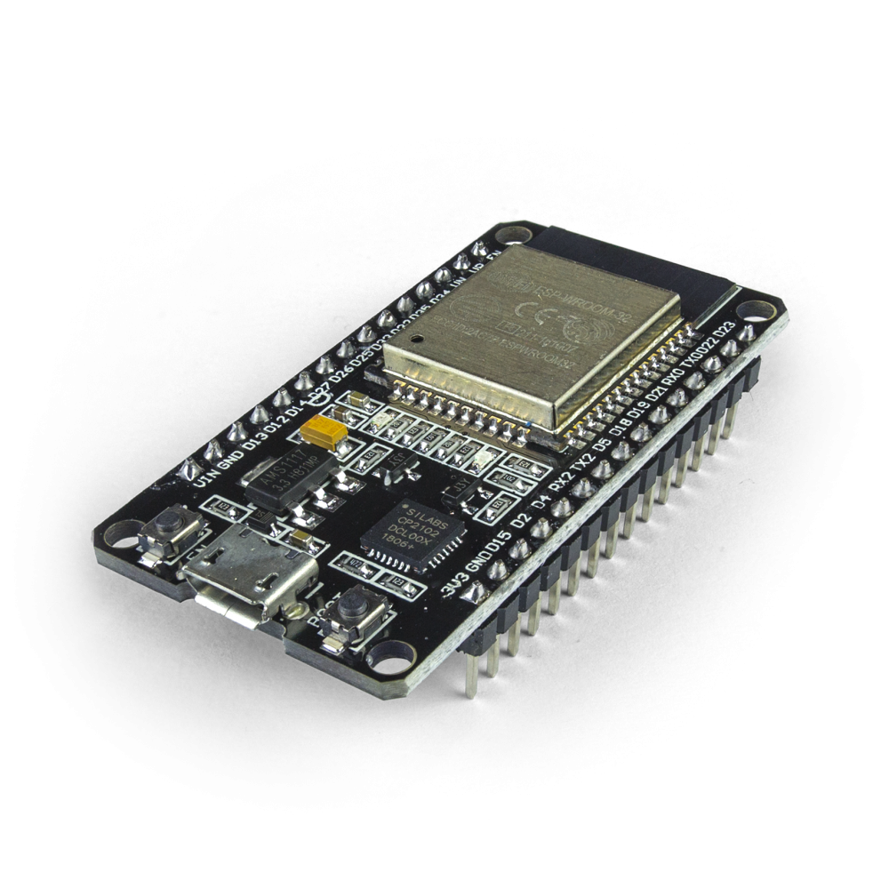

O começo foi meio lento mas comecei instalando o firmware de Micropython na plaquina ESP32. Decidi fazer isso pois já programei usando o C do Arduino e queria aprender uma coisa nova.

Achei dificuldade ao instalar o firmware na placa pelo Ubuntu que tem no meu notebook por causa que não tem muita comunidade em volta desse ramo. Porém, mudando uma coisa ali e aqui eu consegui instalar com sucesso.
Os primeiros tutoriais foram os de ligar e desligar o LED que já vem no ESP32, até aí foi mamão com açúcar, porém após isso começou a ficar mais complexo e mais divertido.
Seguido disso, comecei a ver tutoriais e a documentação oficial do MicroPython que falavam sobre o módulo de Wi-Fi, consegui fazer ele conectar na rede de casa, criar Access Points e hospedar sites que consigo interagir. Fiz uns projetos simples que vou fornecer por aqui.
Além das coisas essenciais, tentei o básico também, rodei um Servo Motor usando o módulo de PWM, toquei uma música em um Buzzer, conectei botões e até fiz um sistema de portão com senha que pretendo instalar na minha casa.
A placa é muito útil pelo preço baixo que ela é vendida.
boot.py
try:
import usocket as socket
except:
import socket
import network
import esp
esp.osdebug(None)
import gc
gc.collect()
with open('./network', 'r') as file:
[ssid, password] = file.read().split('\n')
file.close()
ap = network.WLAN(network.AP_IF)
ap.active(True)
ap.config(essid=ssid, password=password)
ap.config(authmode=3)
while not ap.active():
pass
print('The access point was created successfully!')
print(f'Connect to {ap.ifconfig()[0]} to open the door!')
main.py
from request_handler import handle_request
server = socket.socket(socket.AF_INET, socket.SOCK_STREAM)
server.bind(('', 80))
server.listen(5)
while True:
connection, address = server.accept()
handle_request(connection)
request_handler.py
import utils
from machine import Pin
import json
led = Pin(5, Pin.OUT)
buzzer = Pin(19, Pin.OUT)
def handle_request(connection):
request = connection.recv(1024)
request = request.decode('UTF-8')
first_line = request.split('\r\n')[0].split()
if len(first_line) < 3:
return
(method, path, *_) = first_line
print(f'{method}: {path}')
utils.blink_led(led)
if method.upper() == 'GET':
if path == '/':
response = utils.getFile('./index.html')
utils.sendResponse(connection, 200, response)
else:
response = utils.getFile('./404.html')
utils.sendResponse(connection, 404, response)
elif method.upper() == 'POST':
body = request.split('\r\n')[-1]
body = json.loads(body)
if path == '/attempt_password':
if 'password' not in body:
utils.sendJson(connection, 400, json.dumps({ "message": "You need to pass a password!" }))
elif not len(body['password']):
utils.sendJson(connection, 400, json.dumps({ "message": "You need to pass a password!" }))
else:
password = body['password']
loaded_password = None
with open('./password', 'r') as file:
loaded_password = file.read()
file.close()
if not len(loaded_password):
utils.sendJson(connection, 500, json.dumps({ "message": "There was an error! Come back later!" }))
else:
if password == loaded_password:
utils.sendJson(connection, 200, json.dumps({ "message": "Correct password! Opening the door..." }))
utils.open_door(led, buzzer)
else:
utils.sendJson(connection, 401, json.dumps({ "message": "Wrong password! Taking a picture of you..." }))
utils.take_picture(led, buzzer)
else:
response = utils.getFile('./404.html')
utils.sendResponse(connection, 404, response)
else:
response = utils.getFile('./404.html')
utils.sendResponse(connection, 404, response)
utils.py
import time
from machine import PWM
def sendResponse(connection, status, response):
connection.send(f'HTTP/1.1 {status}\n')
connection.send(f'Content-Type: text/html\n')
connection.send('Connection: close\n\n')
if response:
connection.sendall(response)
connection.close()
def sendJson(connection, status, response):
connection.send(f'HTTP/1.1 {status}\n')
connection.send(f'Content-Type: application/json\n')
connection.send('Connection: close\n\n')
if response:
connection.sendall(response)
connection.close()
def getFile(path):
content = ''
with open(path, 'r') as file:
content = file.read()
file.close()
return content
def blink_led(led):
led.value(1)
time.sleep(0.1)
led.value(0)
def emit_sound(buzzer, freq):
beeper = PWM(buzzer, freq=freq, duty=512)
return beeper
def open_door(led, buzzer):
led.value(0.2)
beeper = emit_sound(buzzer, 50)
time.sleep(0.4)
led.value(0)
beeper.deinit()
def take_picture(led, buzzer):
for _ in range(3):
led.value(0.2)
beeper = emit_sound(buzzer, 440)
time.sleep(0.2)
led.value(0)
beeper.deinit()
time.sleep(0.2)
index.html
<!DOCTYPE html>
<html lang="en">
<head>
<meta charset="UTF-8">
<meta name="viewport" content="width=device-width, initial-scale=1.0">
<title>Door System</title>
<style>
* {
margin: 0;
padding: 0;
box-sizing: border-box;
font-family: monospace;
}
html, body {
height: 100%;
}
body {
display: flex;
flex-direction: column;
justify-content: center;
align-items: center;
gap: 30px;
}
.formGroup {
display: flex;
flex-direction: column;
}
#passwordForm {
display: flex;
flex-direction: column;
align-items: stretch;
gap: 10px;
}
h1 {
font-size: 3em;
}
input {
padding: 10px;
}
button {
padding: 10px;
}
</style>
</head>
<body>
<h1>Door System</h1>
<form id="passwordForm">
<div class="formGroup">
<label for="password">Password:</label>
<input type="password" id="password" required>
</div>
<button type="submit">Try</button>
</form>
<script>
const passwordInput = document.querySelector('#password')
const form = document.querySelector('#passwordForm')
form.addEventListener('submit', (event) => {
event.preventDefault()
const password = passwordInput.value.trim()
if (!password.length) return
passwordInput.value = ''
const headers = new Headers()
headers.set('Content-Type', 'application/json')
const body = {
password
}
fetch('./attempt_password', {
method: 'POST',
headers,
body: JSON.stringify(body)
})
.then((response) => response.json())
.then((data) => {
if ('message' in data) {
alert(data.message)
}
})
})
</script>
</body>
</html>
404.html
<!DOCTYPE html>
<html lang="en">
<head>
<meta charset="UTF-8">
<meta name="viewport" content="width=device-width, initial-scale=1.0">
<title>404 - Not found!</title>
<style>
* {
margin: 0;
padding: 0;
box-sizing: border-box;
font-family: monospace;
}
html, body {
height: 100%;
}
body {
display: flex;
justify-content: center;
align-items: center;
}
h1 {
font-size: 3em;
}
</style>
</head>
<body>
<h1>404 - Not found!</h1>
</body>
</html>
network - o arquivo se chama só network mesmo, sem extensão, serve para guardar as informações do access point
Door System
12345678
password - mesma coisa do network, serve para guardar a senha da porta
1234
boot.py
try:
import usocket as socket
except:
import socket
import network
import esp
esp.osdebug(None)
import gc
gc.collect()
ssid = 'ESP32'
password = 'piovezan'
ap = network.WLAN(network.AP_IF)
ap.active(True)
ap.config(essid=ssid, password=password)
ap.config(authmode=3)
while not ap.active():
pass
print('Access Point was created successfully!')
print(f'IP Address: {ap.ifconfig()[0]}')
from machine import Pin
led = Pin(2, Pin.OUT)
main.py
def web_page(led_state):
if led_state:
led_state = "ON"
else:
led_state = "OFF"
html = """
<html>
<head>
<meta charset="UTF-8">
<meta name="viewport" content="width=device-width, initial-scale=1.0">
<title>ESP32</title>
<style>
* {
font-family: monospace;
}
html, body {
height: 100%;
overflow: hidden;
}
body {
display: flex;
justify-content: center;
align-items: center;
flex-direction: column;
}
</style>
</head>
<body>
<h1>ESP32</h1>
<button id="toggle">Toggle LED</button>
<p>Led is now <strong>""" + led_state + """</strong></p>
<script>
toggleButton = document.querySelector("#toggle")
toggleButton.addEventListener("click", () => {
fetch("/toggle", {
method: "POST"
}).then(() => {
location.reload()
})
})
</script>
</body>
</html>
"""
return html
def error_page():
html = """
<html>
<head>
<meta charset="UTF-8">
<meta name="viewport" content="width=device-width, initial-scale=1.0">
<title>404 - Not found!</title>
<style>
* {
font-family: monospace;
}
html, body {
height: 100%;
overflow: hidden;
}
body {
display: flex;
justify-content: center;
align-items: center;
flex-direction: column;
}
</style>
</head>
<body>
<h1>404 - Not found!</h1>
</body>
</html>
"""
return html
def render_page(connection, response, status):
connection.send(f'HTTP/1.1 {status} OK\n')
connection.send('Content-Type: text/html\n')
connection.send('Connection: close\n\n')
connection.sendall(response)
connection.close()
s = socket.socket(socket.AF_INET, socket.SOCK_STREAM)
s.bind(('', 80))
s.listen(5)
while True:
connection, address = s.accept()
request = connection.recv(1024)
request = request.decode('UTF-8')
(method, path, *_) = request.split('\r\n')[0].split()
print(f'{method}: {path}')
if method.upper() == 'GET':
if path == '/':
led_state = led.value()
render_page(connection, web_page(led_state), 200)
else:
render_page(connection, error_page(), 404)
elif method.upper() == 'POST':
if path == '/toggle':
if led.value():
led.value(0)
else:
led.value(1)
connection.send(f'HTTP/1.1 200 OK\n')
connection.send('Content-Length: 0\n')
connection.send('Connection: close\n\n')
connection.close()
else:
render_page(connection, error_page(), 404)
{kind=link}